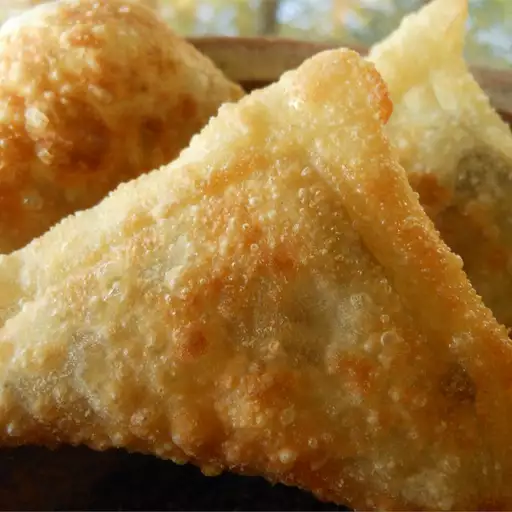

Home
Sambusa

Sambusa is a popular snack in many parts of the world, including the Middle East, South Asia, and East Africa. It consists of a thin pastry shell filled with a savory mixture, such as spiced ground meat, lentils, or vegetables. The filling is typically seasoned with a blend of herbs and spices, giving it a flavorful and aromatic taste. Sambusas are often deep-fried until crispy and golden brown, making them a delicious and satisfying treat.
Ingredients
- Pastry dough
- Ground meat or lentils
- Onion and garlic
- Spices
- Oil for frying
- Prepare the filling by cooking the ground meat or lentils with onion, garlic, and spices until browned and fragrant.
- Roll out the pastry dough and cut it into small circles or squares.
- Place a spoonful of the filling in the center of each piece of dough.
- Fold the dough over the filling to form a triangle or rectangle shape, then seal the edges with water or egg wash.
- Heat oil in a deep fryer or skillet to 350°F (180°C).
- Carefully place the sambusas in the hot oil and fry until golden brown and crispy, about 3-4 minutes per side.
- Remove the sambusas from the oil and let them drain on a paper towel-lined plate.
- Serve hot with your favorite dipping sauce and enjoy!